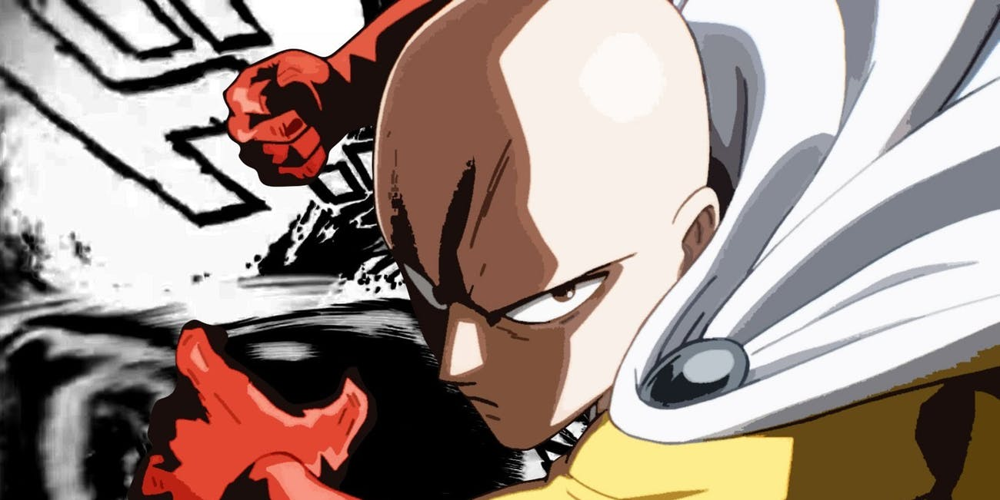

Esta caricatura trata sobre saitama una persona que estaba desempleada hasta que un dia un mounstro ataca y el es el unico que puede hacer algo aunque se siente impotente puesto que solo es un humano común y corriente , increiblemente logra vencer a su oponente y desde ese dia se fijo un proposito ser un heroe por diversion y entrenar todos los dias hasta volverse tan fuerte como para hacer frente a sus rivales. Despues de este pasan 3 años y saitama (el protagonista ) logra su meta solo que con unos incovenientes, el entrnó tan intenso que se quedo calvo ademas de que ahora no hay ninguna persona que le pueda hacer frente ya que a todos sus adversarios les gana con un solo golpe. Así que a partir de este punto comienza la serie contandonos sus aventuras graciosas de todos los dias, saitama en su camino se enfrentara con varios enemigos pero el cuenta con unos aliados con cuales hara equipo para derrotar a los villanos.
Saitama una persona que estaba desempleada hasta que un dia un mounstro ataca y el es el unico que puede hacer algo aunque se siente impotente puesto que solo es un humano común y corriente pero comienza formular una estrategia donde exista la posibilidad de que el sea el ganador, el espero el momento donde el villano bajara la guardia para atacar , despues de esto saitama se convierte en un heroe por diversion y comenza a entrenar de la siguiente manera 100 lagartijas, 100 abdominales, 100 sentadillas y correr 10 kilometros todos los dias durante 3 años seguidos ademas de tener una dieta muy dura, este programa de entrenamiento trajo consigo dos cosas , una fue que saitama perdio su camino y segundo es que el adquirio una fuerza incomprendible incluso rompio su limite humano sin morir.
En este apartado mostraremos las clasificaciones que obtienen los mounstros por su nivel de destruccion y poder
Tigre: Un peligro que pone en riesgo la vida de una persona o un grupo muy reducido
Demonio: Un peligro que pone en riesgo una ciudad
Dragon: Un peligro que pone en riesgo varias ciudades
Dios: Un peligro que pone en riesgo toda la humanidad
Nombre |
Unidad de Poder |
IMAGEN |
SAITAMA |
???????? |
 |
BANG |
200 |
|
GENOS |
350 |
|
ATOMIC SAMURAI |
300 |
|
TORNADO |
700 |
Enlaces :